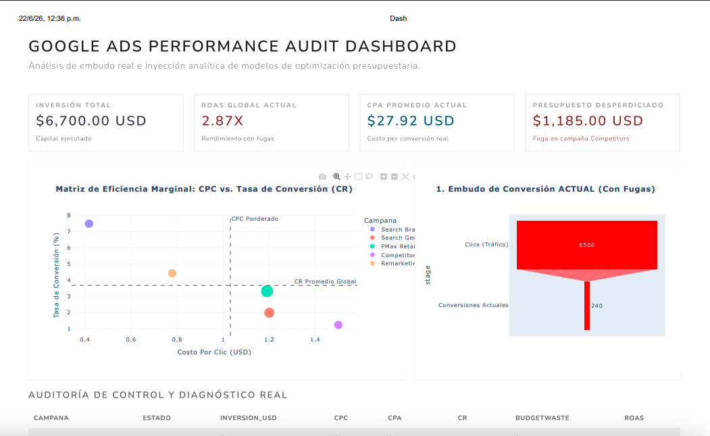

Caso de estudio · Google Ads
ROAS estancado en Google Ads: auditoría predictiva para invertir mejor, no más
Presupuesto mal distribuido no es lo mismo que presupuesto insuficiente. Este caso muestra cómo redistribuir la inversión sin gastar un peso más.
El problema
La cuenta tenía un problema común pero difícil de ver sin auditar a fondo: el ROAS estaba estancado y el presupuesto no estaba distribuido según el verdadero rendimiento de cada segmento. Parte de la inversión se iba a campañas de bajo retorno, mientras las de mejor desempeño estaban limitadas.
El trabajo realizado
- Auditoría completa de la cuenta: estructura de campañas, grupos de anuncios, palabras clave, términos de búsqueda, anuncios y estrategia de pujas.
- Construcción de un modelo de evaluación con técnicas de análisis predictivo para identificar qué combinaciones de campaña, audiencia, dispositivo y horario tenían mayor potencial de conversión.
- Redistribución del presupuesto hacia los segmentos con mejor desempeño, con reducción gradual en las áreas de bajo retorno.
El objetivo no era gastar más, sino hacer que cada peso invertido trabajara mejor.
El resultado
Incremento del ROAS, reducción del costo por adquisición y una inversión más eficiente, concentrada en las campañas y audiencias con mayor probabilidad real de generar ventas.

¿Tu ROAS en Google Ads lleva meses estancado?
Puedo auditar tu cuenta con un modelo de análisis predictivo que identifique dónde redistribuir tu presupuesto — sin necesidad de aumentar la inversión.
Hablar con Daniel por WhatsApp